Having the ability to impact your surroundings is the greatest gift of all.
I intend to use it well.
Check below four of my recent selected projects.
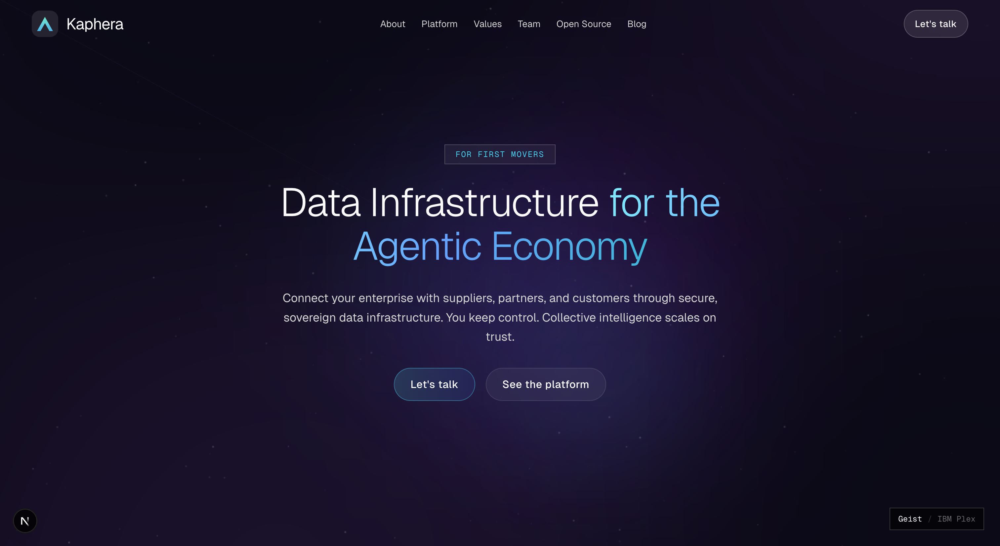
Kaphera
End-to-end product design for an early-stage data startup
3 working prototypes built in Zed with Claude, Supply Chain Hub, Data Marketplace, and Research Portal, taking the product from early discovery through to delivered interfaces.
ION
Nature Banking Experience & Design System
Built and deployed the ION web experience using Zed + Claude, cinematic slide presentation with Faraday wave animation and ambient audio. Set up the design system from existing brand files as organized base construction for the project.
HealthTalk
AI-Powered Clinical Documentation Platform
Enterprise AI platform transforming clinical conversations into compliant medical documentation.
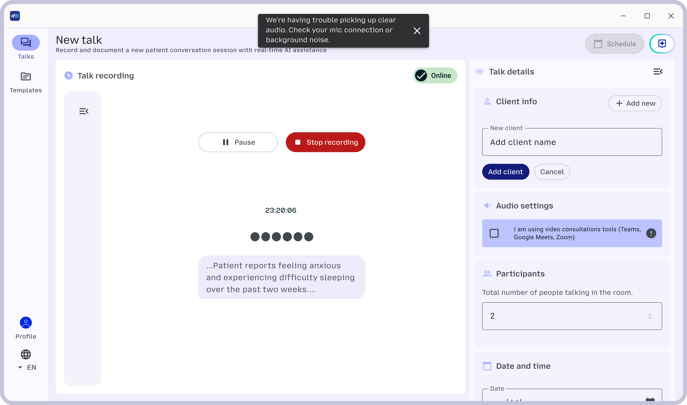
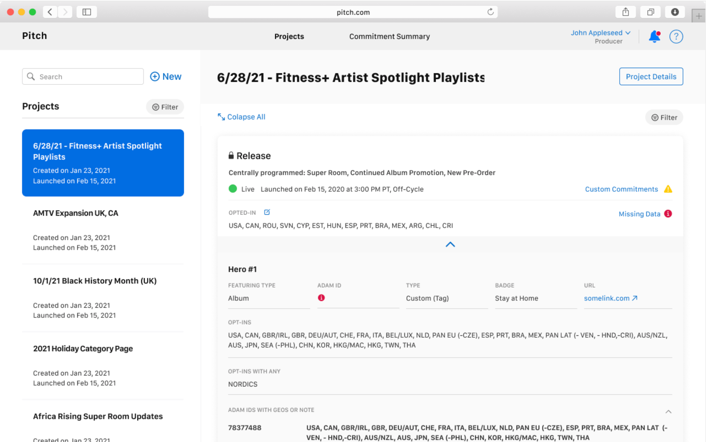
Pitch V2
Internal Editorial Content Localization
A platform used to create, initiate, manage, review, and track campaigns.
Localization System
Radio-Friendly Song Cleaning Platform
An application used to help clean explicit songs prior to playing them on radio stations.
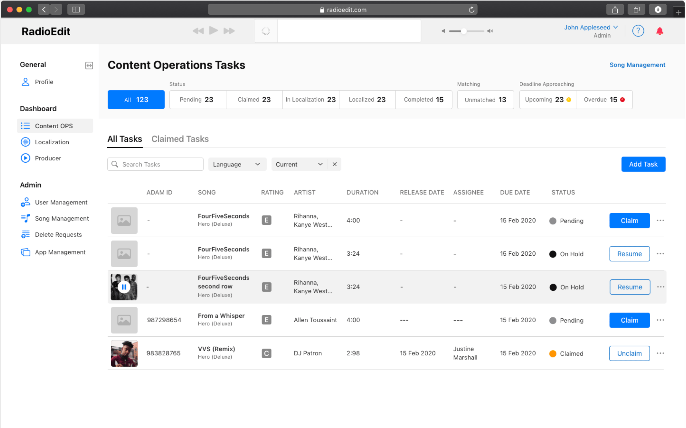
HealthTalk
AI-Powered Clinical Documentation Platform
Enterprise AI platform transforming clinical conversations into compliant medical documentation.
Domain
HealthTech
Platform
Web & Mobile
Type
Enterprise SaaS
Once Upon a Time…
Picture this: It's 6 PM. Dr. Sarah has just finished seeing her last patient, a heartfelt conversation about managing chronic pain. But her day isn't over. Not even close.
She opens her laptop and begins the dreaded task: writing clinical reports. One by one, she recalls each conversation, structures her notes into proper medical format, ensures everything meets compliance requirements. It's important work, but it's not why she became a doctor.
Hours pass. It's now 9 PM. Dr. Sarah closes her laptop, exhausted, not from healing patients, but from paperwork. And tomorrow? She'll do it all over again.
Enter HealthTalk
What if Dr. Sarah could just… talk to her patients and have everything documented automatically? What if the AI could listen, understand, and transform those conversations into perfectly structured clinical reports, while she focused on the person in front of her?
That's exactly what HealthTalk does. It's not magic, it's thoughtful AI-powered design that turns hours of administrative burden into minutes of review time.
Dr. Sarah now leaves the clinic at 6:15 PM.
Same patient care, zero overtime paperwork.
AI as Design Partner
Designing an AI-powered product required using AI as a core tool in the design process itself. This section explores how I integrated AI tools throughout research, prototyping, and validation.
Core Principle: Real Users First, AI as Amplifier
While AI tools dramatically accelerated my process, all major design decisions were validated with real clinicians. AI helped me move faster, test more assumptions, and arrive at user interviews with sharper questions.
Three Ways AI Transformed My Design Process
AI Personas
Created realistic clinician personas to test ideas throughout the day
Figma Make
Built and tested functional prototypes in hours instead of days
Iterative Testing
Validated assumptions daily before committing to high-fidelity designs
ChatGPT Personas: Always-On Design Partners
Why I Built AI Personas
Real user research is essential but happens in discrete sessions. Between those sessions, I needed a way to continuously pressure-test assumptions, explore edge cases, and refine flows without waiting for the next round of interviews.
Using ChatGPT, I created detailed personas based on real research, emergency room physicians, mental health therapists, general practitioners, each with specific workflows, pain points, technical comfort levels, and motivations.
How I Used Them Daily
- Quick concept validation: Rapid feedback on new design directions
- Edge case exploration: Surfacing scenarios before real user testing
- Workflow walkthroughs: Talking through entire user journeys to identify friction points
Example: Template Flow
After designing the template creation flow, I spent an afternoon querying three AI personas about the step-by-step process. This surfaced 8 specific usability concerns, all of which I addressed before showing the design to real users.
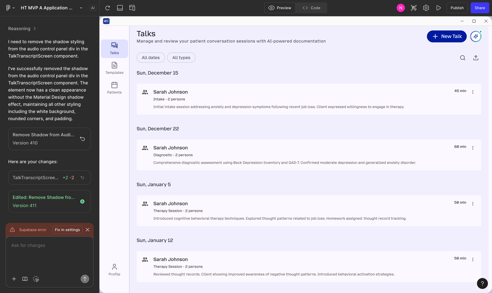
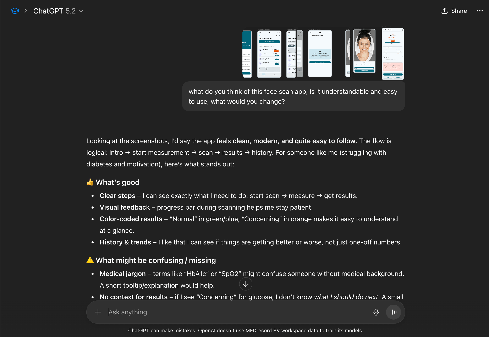
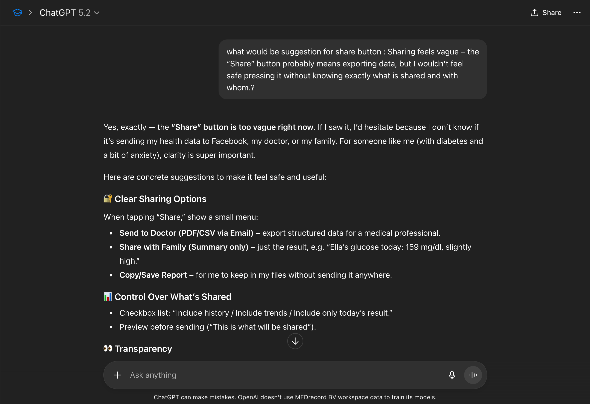
"The AI personas never replaced real users, they made me better prepared to learn from them."
Figma Make: From Concept to Prototype in Hours
HealthTalk involved complex, multi-step workflows with heavy data manipulation, transcripts being parsed into reports, templates driving AI behavior, permissions controlling access. Static mockups couldn't convey the nuance.
My Figma Make Workflow
Design Core Screens (Figma)
Start in Figma, defining layouts, visual hierarchy, component patterns
Build Functional Prototype (Figma Make)
Create working versions with real interactions, editing, and data flows
Test with AI Personas + Stakeholders
Walk through prototypes with ChatGPT personas, then share with engineering
Validate with Real Users
Test with actual clinicians, core interaction model already refined
Actual Example: MVP Prototype
ht-mvp-a-prototype.figma.siteThis prototype helped validate core recording and transcription flows before a single line of production code was written.
"Figma Make transformed prototyping from a late-stage validation tool into a core part of my daily design thinking."
The Complete AI-Augmented Design Cycle
Initial Research (Real Users)
Interview clinicians, observe workflows, understand pain points
Create AI Personas (ChatGPT)
Build realistic personas based on research findings
Ideate + Validate (ChatGPT Personas)
Test multiple concepts throughout the day, surface edge cases
Prototype (Figma Make)
Build functional, interactive prototypes to test flows and interactions
User Validation (Real Clinicians)
Test refined concepts with actual users, arrive with specific hypotheses
Refine + Ship
Incorporate feedback, finalize designs, hand off to engineering
Key Takeaway
AI tools didn't replace user research, they made every stage between research sessions more productive. I could test more ideas, catch more problems, and arrive at user interviews with better questions and sharper hypotheses.
The Conversation Begins
Dr. Sarah sits down with her patient and taps "Start Recording" on her screen. From that moment, HealthTalk becomes her invisible assistant, listening attentively to every word. The interface shows her exactly who's speaking, captures the conversation in real-time, and displays her custom checklist right on screen.
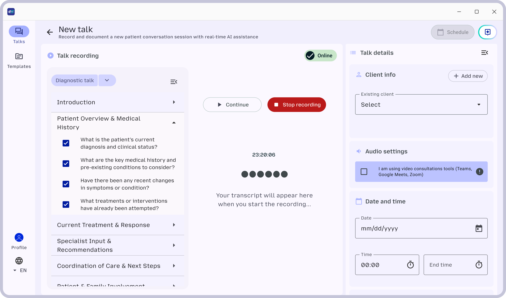
Three Minutes Later…
The consultation wraps up. Dr. Sarah says goodbye to her patient and taps "Generate Report." She grabs a coffee. By the time she's back at her desk, literally three minutes later, a complete, structured clinical report is waiting for her. Formatted in proper SOAP structure. All key details from the conversation included. Ready to submit.
Need it in Spanish for the patient? One click. Ready to paste into the EHR? Copy and done. What used to take 45 minutes now takes 3 minutes of quick review and approval.
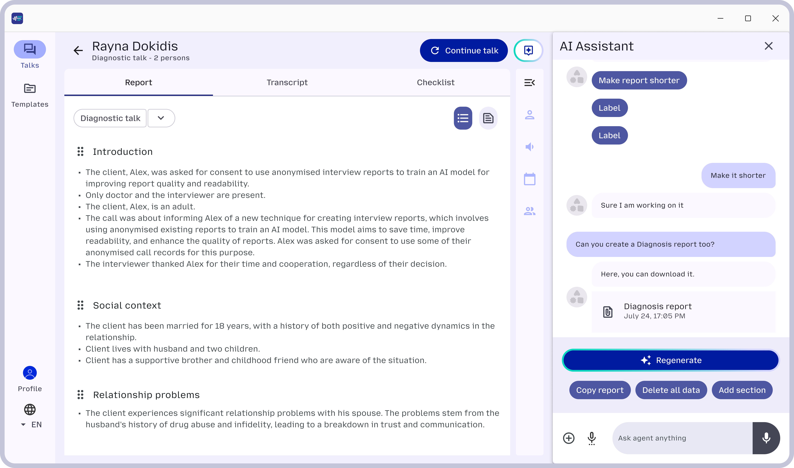
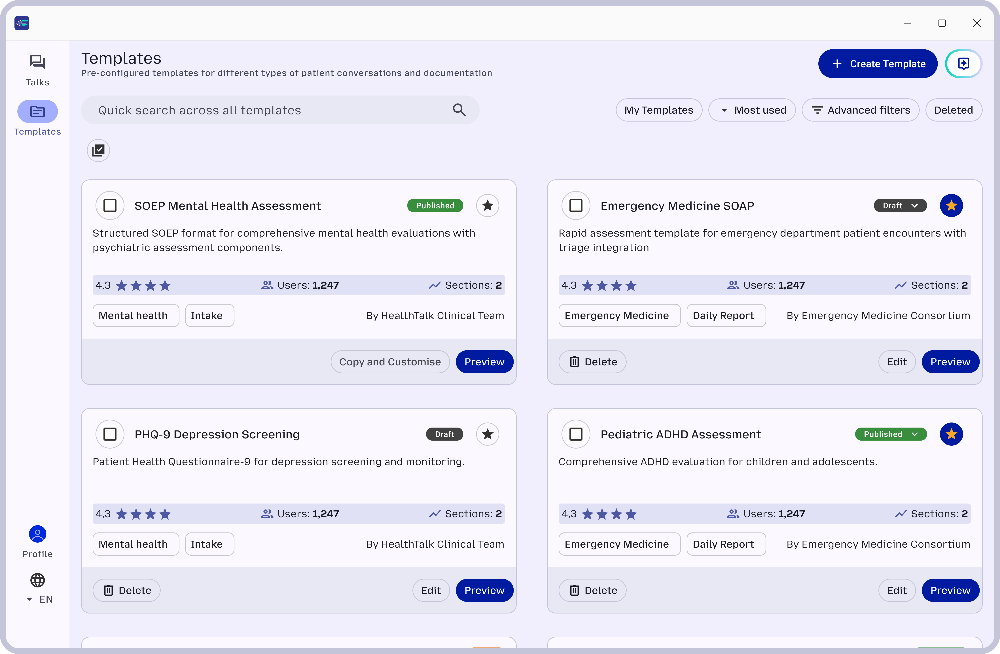
But Wait… Every Doctor is Different
Dr. Sarah is a pain management specialist. Her colleague Dr. James is a psychiatrist. Their documentation needs are completely different. Cookie-cutter templates? Not happening.
That's why HealthTalk lets doctors build their own custom templates, no coding required. A simple form-based builder with intuitive inputs and a live preview. The entire healthcare organization can standardize their documentation while each doctor personalizes their experience.
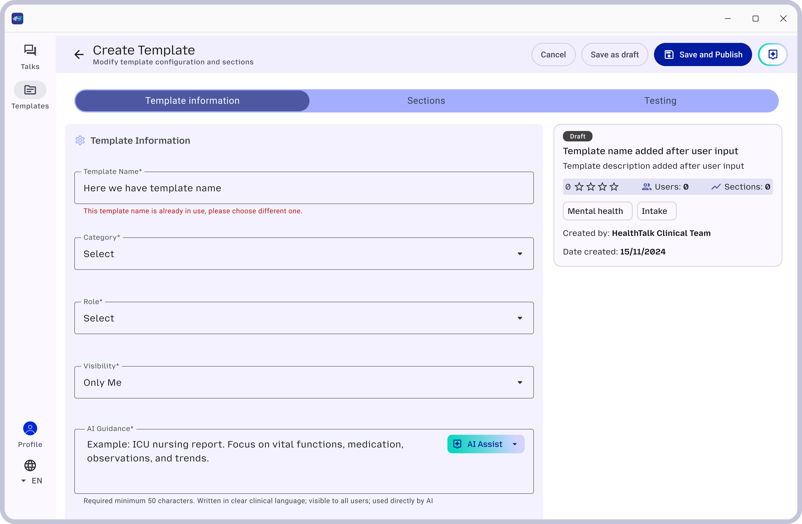
And It Goes Wherever You Go
Because doctors don't always work from their desks. They're making house calls, consulting in different wings, or reviewing notes between appointments. HealthTalk works beautifully on mobile too.
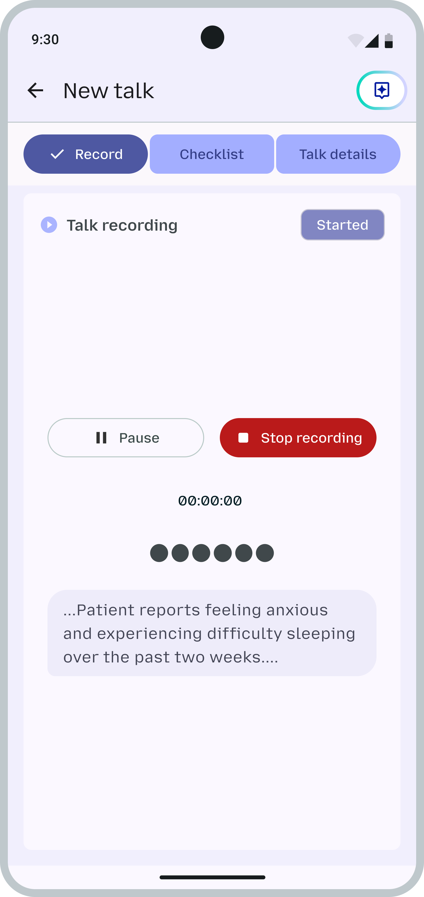
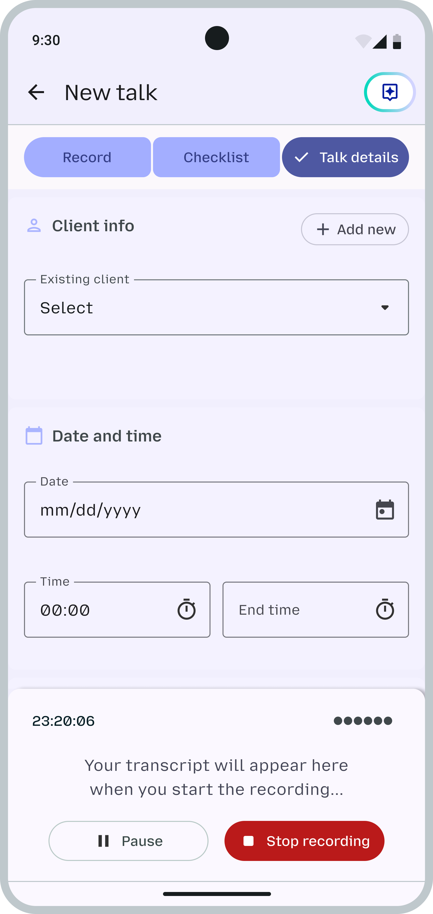
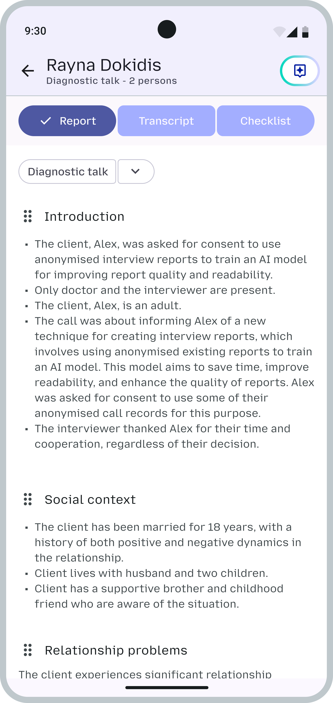
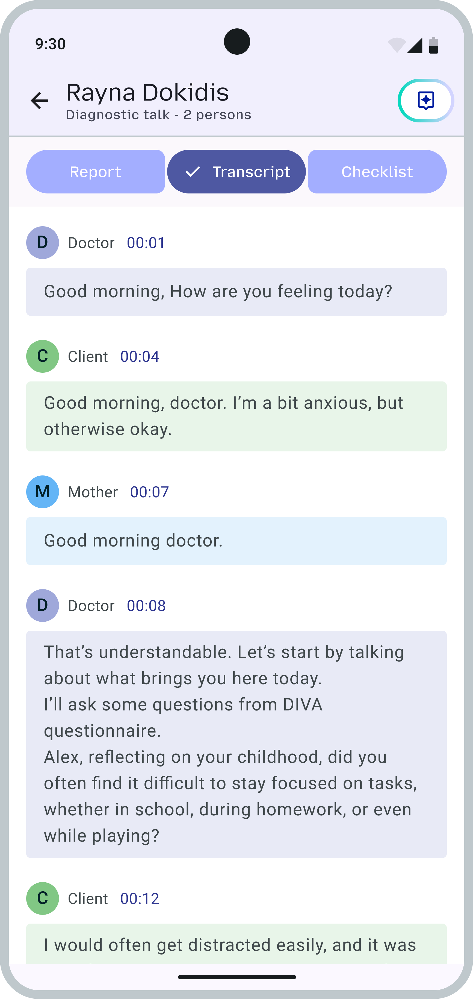
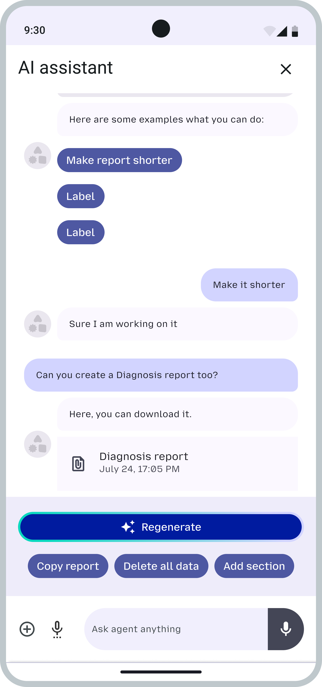
Design Principles I Applied
Trust Before Automation
AI supports decisions, never hides logic. Always show the reasoning and allow human override.
Cognitive Load Reduction
Clear hierarchy and progressive disclosure ensure information is presented at the right time.
Clinical Alignment
Workflows mirror real clinical thinking patterns, making the tool feel natural to medical professionals.
Scalability
Reusable components and patterns ensure consistency and faster iteration across features.
Human-in-the-Loop AI
Clinicians always remain in control. AI provides suggestions and automation, but final decisions rest with medical professionals.
Results & Outcomes
High-level impact across productivity, adoption, and user satisfaction
~25 min → 2–3 min
Documentation Time Reduced
Reduced documentation time per session from approximately 25 minutes to 2–3 minutes
↑ Adoption
Increased Adoption
Increased adoption of AI-generated reports across teams with high user satisfaction
High Reuse
Template Reusability
High reuse rate of organization-level templates, reducing redundant work
↑ Productivity
Productivity Gains
Clear productivity gains visible in platform analytics across all user segments
Meaningful Impact on Patient Care
By reducing administrative burden, HealthTalk allows clinicians to spend more time with patients, directly improving both clinician experience and patient outcomes.
Reflection
Here's what I learned: The best healthcare technology doesn't try to replace doctors, it gives them their time back. Every minute saved on paperwork is a minute they can spend with patients, with their families, or simply recovering from the emotional weight of the job.
My job wasn't to show off what AI could do. It was to create interfaces doctors could trust completely, where they could see the AI's reasoning, override decisions, and always feel in control. Because in healthcare, trust isn't a nice-to-have. It's the product.
Key Learnings
AI tools as design amplifiers
Using ChatGPT and Figma Make didn't replace user research, it made every moment between sessions more productive.
Trust is the foundation
In high-stakes domains like healthcare, transparency and human control aren't optional, they're the core of the product experience.
Rapid prototyping changes everything
Being able to build functional prototypes in hours fundamentally changed how I approach design, moving from static validation to continuous experimentation.
"Designing AI products means designing trust, transparency, and human agency into every interaction."
Next Case Study
Pitch V2, Internal Editorial Content Localization
Pitch V2
Internal Editorial Content Localization
A platform used to create, initiate, manage, review, and track campaigns.
Domain
Editorial
Platform
Web
Type
Enterprise B2B
Problem
Key Insights
The project was done during corona, so all our communication was done through calls and emails. For the discovery phase, we used interviews as a research method.
Most of the insights are connected with hard communication between people on the same project. With their tight schedule, they need information fast, especially when there is a need for immediate action.
Complex workflow
Multiple tools and platforms made the process inefficient
No progress tracking
Impossible to see where projects stood at any given time
Hard to manage people
Difficult to track team members and their responsibilities
A lot of emailing
Communication scattered across email threads
Tight schedule
Constant deadlines and sudden urgent tasks
Scattered information
Data exchange across different tools
Goal and Solutions
Since organizations used many different tools for communication and data exchange, tracking the whole work process was impossible. Our goal was to create unique experiences to make their everyday tasks easier.
Unified workflow management
Provide tooling for handling the whole process of creating campaigns and tracking progress.
Integrated communication
Move communication from emails to the application, connected with content and campaign data.
Permission management
Manage people's permissions on the projects and campaigns.
Personas
Producer
Responsible for the creative aspects of the campaign, including developing playlists and generating ideas.
Music Editor
Responsible for preparing and publishing the music materials required for the campaign.
Design Solution
Dashboard
Dashboard, Projects list
- List of projects on the left, project overview on the right
- Ability to expand phases and see a complete project commitment right on the dashboard

Dashboard Demo Video
Project
Project commitment & collaboration
- Project commitment summary accessible in one click
- Tabs for grouped information
- Project collaboration

Project Demo Video
Phase
Phase commitment & collaboration
- Phase commitment summary accessible in one click
- Phase collaboration
- Information layout pattern same as on project page for easy learning

Phase Demo Video
Phase Edit
Editing Phase
- Easy Edit mode
- Featuring play layout redesigned
- Showing only needed featuring plan
- A consistent pattern used on project brief to create stability and confidence in users

Phase Edit Demo Video
In-app Notifications
In-app notifications
- All notifications in one place
- Ability to click on the specific notification that would lead to project/phase notification or comment it is referring to

In-app Notifications Demo Video
Reporting
Email reports
When there are a lot of projects going on and you want to be updated on the most important campaigns, email reports come in handy. We made email reports personalized so users can decide what information is important to them.
First, we added all the information we can to our report. Second, we had clean-up sessions with users and removed unnecessary data. We pushed the cleaned version to production to see how it will be received.
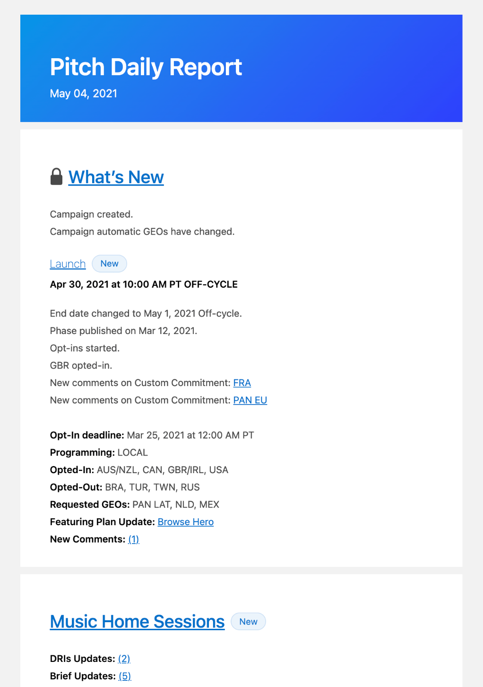
Pitch Daily Report email interface
Impact
1
Unified platform
Tool for all editorial workflows
3+
Continents
Global reach
∞
All connected
Teams unified across the platform
Next Case Study
Localization System, Radio-Friendly Song Cleaning
Localization System
Radio-Friendly Song Cleaning Platform
An application used to help clean explicit songs prior to playing them on radio stations. The software simplifies the process for teams across music platforms.
Domain
Music Platform
Platform
Web
Type
Enterprise B2B
Problems
Key Insights
By conducting onsite discovery research, mapping workflow, and user persona information, I could visualize the main points that helped me determine possible MVP solutions.
- Most Producers are in US or UK timezones
- People who are doing localization are all around the world
- Communication and getting things done fast is a priority for all
It can take days for a producer to get a response from the localization of their requested song. We set the goal to make producers know the progress of cleaning all the time so they can plan radio playlists with ease.
Scattered communication
Communication done through emails and telephone, making tracking difficult
Lost documentation
Data exchange through different tools easily lost or misplaced
No progress tracking
Hard to follow work progress and assigned team members
Timezone challenges
Different time zones make communication even harder
Contact confusion
Hard to find assigned contacts for quick action
Manual data transfer
Transferring flagged content information to other software
Goal and Solutions
Make one unified platform. Smart notifications. Simplified processes. Single source of truth.
Unified platform
Make one tool for people in charge of creating tasks and people assigned for the same.
Smart notifications
Have a notification system with timezones in mind so everyone gets what they need on time.
Reduced email clutter
Make email inboxes less crowded.
Single source of truth
Have one source of truth so there is no misunderstanding.
Simplified processes
Streamline workflows to reduce complexity.
Seamless integrations
Integrations for easy export and import of data.
Empathise, Understand
London Visit
Team of: designer, head of delivery, team lead, and project manager visited stakeholders and users in London.
We had a couple of long days of talking and questioning the people in the studio. The main focus was understanding workflows and gathering data that help us in future decisions.
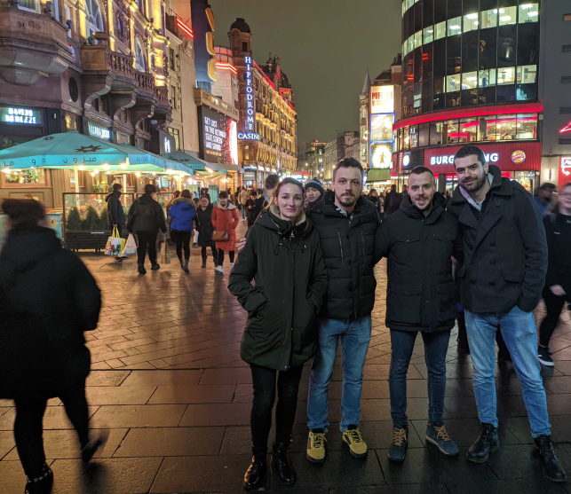
Contemplating ideas in the evening.
Personas
Producers
People who are making playlists for their radio shows. They need clean songs or songs flagged explicit content. Their timeframe is tight and usually, they work ad hoc.
Content Operations
People who are in between producers and localization. They get the list of songs, create tasks, follow the progress and make sure songs are cleaned in time.
Localization
People with multilingual skills all around the world. Their task is to listen to the song, find explicit content, flag it and send it back to content operation.
Design Solution
Define, Ideate, Prototype, Test, and Do It Again :)
Information Architecture
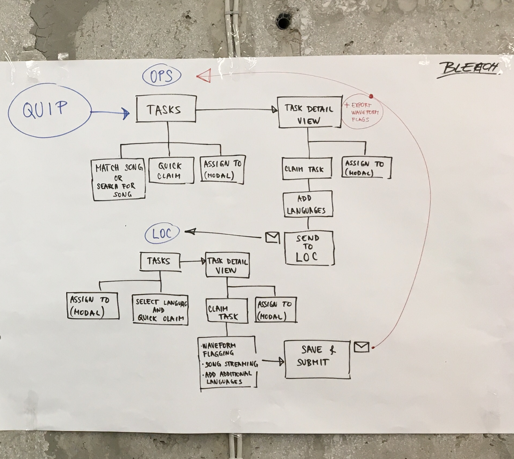
Overview of Tasks
Task details screen with full localization tool. Aside from having a task list, they needed filtering, pausing, reassigning the task, and option to listen to the song.
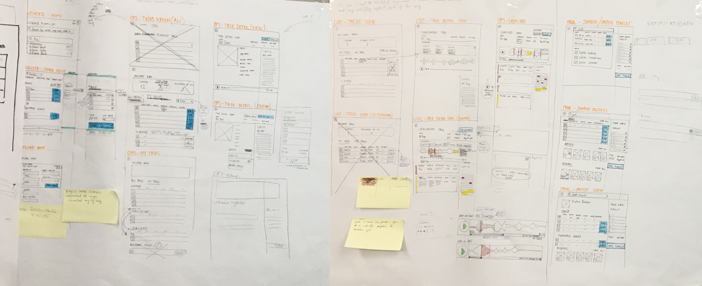
Admin task list screen
Song Details
Aside from metadata of the song, the task details screen had to contain song lyrics and a full overview of song localization status. Admins can assign or reassign people since it is a fast pace workflow.
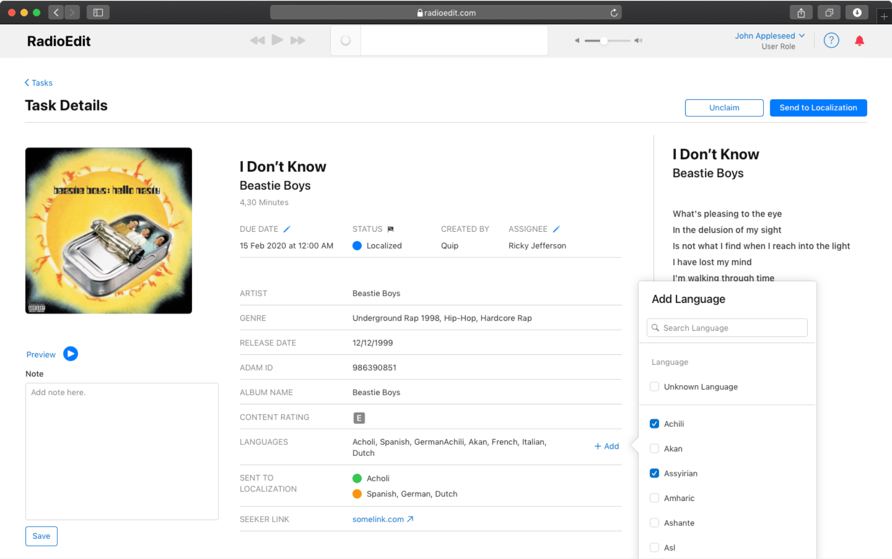
Song details screen
Localization Screen
People who work in localization had a task list from where they can claim the task. In task details, they have a waveform, song lyrics, and the option to flag explicit content with notes. Challenge was to build the option of selecting lyrics and having them displayed on the waveform and in the flag list at the same time.
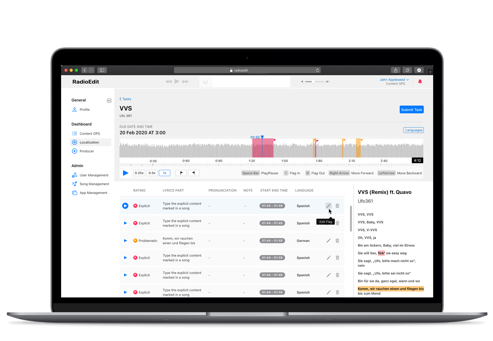
Localization screen with waveform
Time for Deep-Dive QA Iterations
During development feature by feature, constant quality assurance is a must. Designers are perfect for finding mistakes in the UI. They know how things should look and behave.
After each sprint, I would spend a couple of hours reviewing the application. This way we keep the quality of design at a high level, especially when working with top clients.
Next Case Study
Kaphera, Data Infrastructure Prototypes
Kaphera
End-to-end product design for an early-stage data startup
Sole designer working directly with the founders. Taking the product from early-stage discovery through to working prototypes, built in Zed with Claude.
Domain
Data Infrastructure
Platform
Web
Team size
~4 people
Status
Ongoing
The Engagement
Kaphera is an early-stage startup building infrastructure for governed data exchange. I joined as the sole designer, working directly with the product owner and engineering team of four.
No layers of process, just close collaboration with the founders, moving fast from discovery to delivered interfaces. End-to-end ownership of the product design.
How I Work Here
Rather than building static mockups, I produce working coded prototypes using Zed and Claude. The engineering team gets something they can run, test, and build directly from, and founders get a real feel for the product before a line of production code is written.
But Kaphera is also where I’m discovering something bigger: a genuinely new way of working as a digital product designer.
What I’m discovering
AI as an everyday tool changes what it means to be a product designer
For most of my career, the designer’s job was to get as close to the real thing as possible, wireframes, then mockups, then prototypes, and then hand them off. Each step was a translation layer, and something always got lost.
Working with Zed and Claude, those layers collapse. I design in the medium the product will actually live in. I don’t describe what something should look like, I build it, see it, adjust it, and ship it. The result is the design.
What AI gives me isn’t shortcuts, it’s execution speed on the parts that aren’t the thinking. The judgment about what’s right for the user, the decisions about hierarchy and flow, what to simplify and what to keep, those are still entirely mine.
But the gap between an idea and something you can actually put in front of a person and test, that gap is now measured in hours, not weeks. That changes everything about how early and how often you can get real feedback.
Project 01
Kaphera Website
Marketing site for Kaphera, in development.
Designed and built in Zed with Claude, working directly with the founders on messaging, structure, and visual identity. The site is actively evolving as the product takes shape.
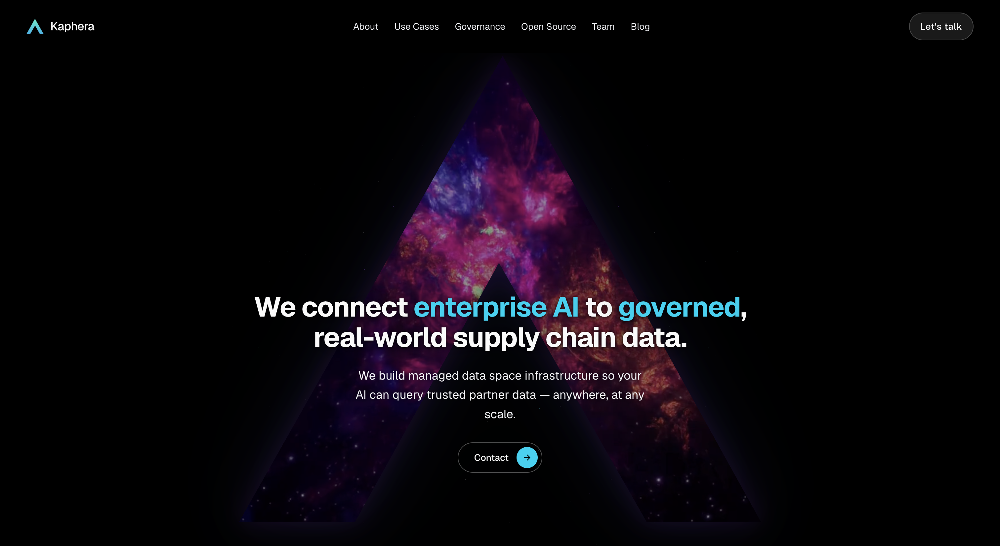
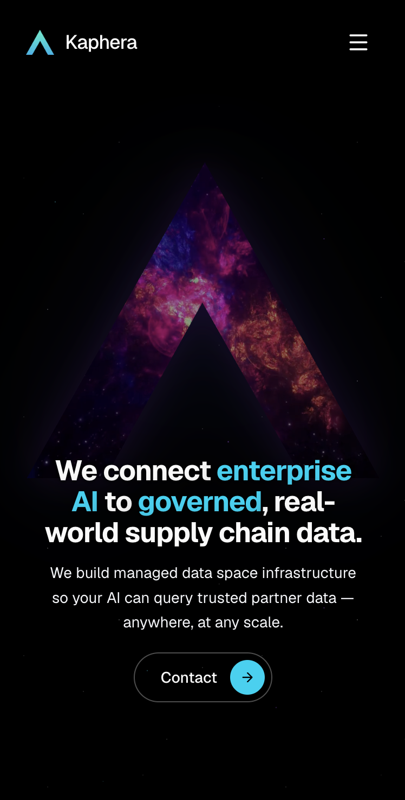
Project 02
Supply Chain Hub
Real-time visibility across your supply chain.
Track every PO across all routes. Delivery date visibility powered by connected vendor data. Anomalies surface before they become problems.
View Live Prototype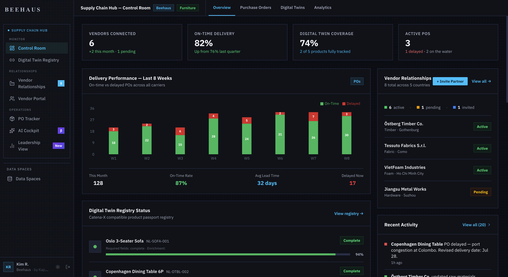
Project 03
Data Marketplace
Sovereign data exchange, governed by policy.
Buy and sell datasets with machine-readable access contracts. Every transaction is auditable. No data leaves without your rules in place.
View Live Prototype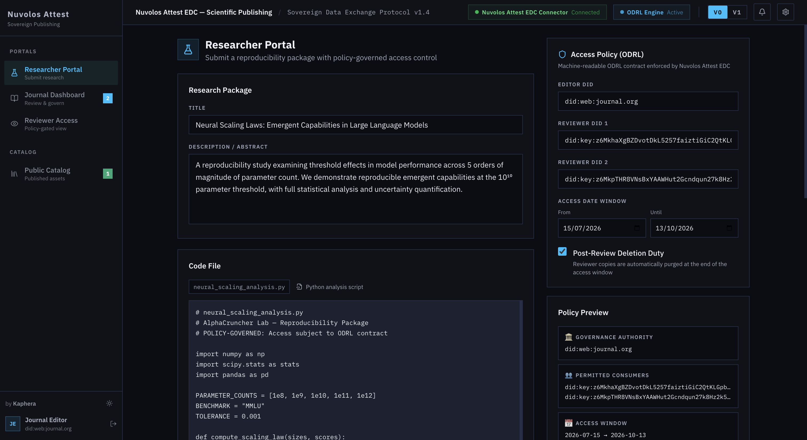
Project 04
Research Portal
Policy-governed access for sensitive research data.
Submit reproducibility packages with ODRL contracts enforced at the connector level. Reviewer access expires automatically. No manual revocation required.
View Live Prototype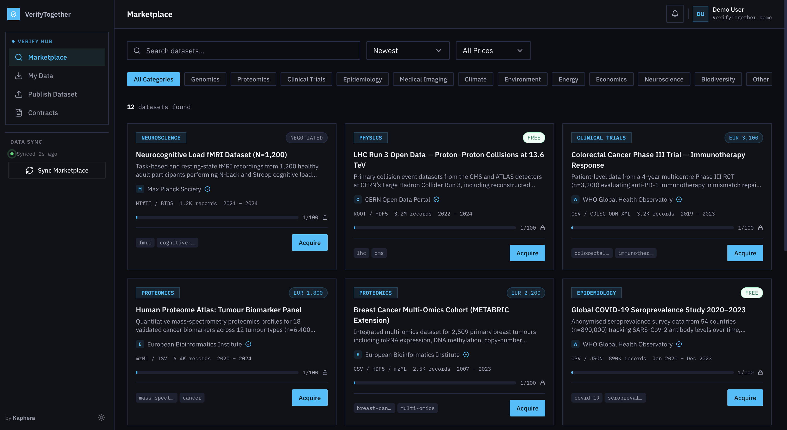
Next Case Study
ION, Web Experience & Design System
ION
Web Experience & Design System
Built and deployed the ION web experience using Zed + Claude. Set up the design system from existing brand files as an organized base construction for the project.
Domain
FinTech / Nature Banking
Platform
Web
Status
Live on GitHub Pages
The Problem
Money is a system for directing economic activity. Right now it flows toward financial return, which is easy to measure, while damage to biodiversity, soil, water, and human wellbeing goes unaccounted for.
Capital keeps flowing toward things that pay off financially even when they cause that damage. The structural problem is measurement: what gets measured gets funded.
The Answer
ION changes where money flows. Think of it as a bank account, following the Nature Banking principle, where capital grows according to a natural growth curve while directly funding The Works: a venture developing R&D for products aligned with human wellbeing and nature.
Returns cycle back to three places: the ION holder, further product development, and the guardians of nature. An ION account exists alongside a regular account, serving a different purpose, connecting to a different economy.
My Work
Two deliverables, built with Zed + Claude, deployed to GitHub
ION Experience
Cinematic web experience, wave animation, Oscine fonts, ambient audio, coded in Zed with Claude and deployed to GitHub Pages.
Design System
Organized the Oscine font family, defined CSS tokens, and translated the ION brand guidelines into a coded, structured foundation for the project.
Deliverable 01
The ION Experience
A cinematic web presentation of the ION concept, live on GitHub Pages.
Built entirely with Zed + Claude using the actual ION brand assets. Seven full-screen slides fade in and out as you scroll or click, with the ION concept unfolding across them from the structural problem through to the answer and closing statement.
A 3D Faraday standing-wave particle grid fills the bottom third of the screen, animated with four superimposed wave modes creating ever-shifting patterns. Ambient audio from bubbling.mp3 pairs with it, toggled by a sound button in the corner.
Wave animation
Faraday standing-wave particle grid
Four superimposed wave modes (parallel ridges, diagonal, hexagonal, fine ripple) create ever-shifting Faraday patterns. 310 × 105 dot grid, projected in 3D perspective via Canvas API. Oscillates continuously using time-driven band amplitudes.
Typography
Oscine, real font files, loaded locally
All four weights (Light 300, Regular 400, Bold 700, XBold 800) plus italics, loaded via @font-face from web/. No CDN fallback, ION’s actual typeface renders on every device.
Navigation
7 full-screen slides, no page scroll
Scroll wheel, touch swipe, keyboard arrows, click, and nav-dot tap all advance slides. Content cross-fades at 650ms. Mobile shows split slides for The Answer section to keep text legible. Fully responsive.
Design System
Using the ION brand guidelines and existing Oscine font files as source material, translated into a coded, organized foundation for the project.
File Structure
Everything organized into three clear concerns: experience, fonts, and audio.
ION/
├── index.html, ION Experience 800 lines, 28.8 KB
├── web/, Oscine font family
├── oscine_lt-webfont.woff2, Light 300
├── oscine_rg-webfont.woff2, Regular 400
├── oscine_bd-webfont.woff2, Bold 700
├── oscine_xbd-webfont.woff2, XBold 800
├── oscine_it / ltit / bdit-webfont.woff2, Italics
├── fonts.css, @font-face declarations
├── fonts_external.css
├── demo/, font specimen
└── specimen_files/
└── audio/
└── bubbling.mp3, ambient sound
CSS Design Tokens
Tokens as implemented in index.html, the experience uses a warm off-white base rather than pure white, giving it a more cinematic, print-like quality distinct from conventional fintech interfaces.
:root {
--bg: #F8F8F6, warm off-white base
--ink: #111110, near-black text & logo
--mid: #747470, labels, nav, secondary text
--faint: #E0E0DC, dividers, borders
--wave-h: 32vh, wave canvas height
--pad: clamp(20px, 6vw, 80px), responsive side padding
}
--bg
#F8F8F6
warm off-white
--ink
#111110
near-black
--mid
#747470
labels & nav
--faint
#E0E0DC
dividers
Color Palette
Pantone 7477 UP as the primary brand color, supported by a full teal scale and neutral greys.
ION Teal
#2D777B · Primary
Pantone 7477 UP
ION Black
#111111 · Text / Logo
Pantone Black
ION White
#FFFFFF · Background
Pantone Paper
ION Gradient
White → Teal · 135°
Backgrounds / POS
Teal Scale
100
80
60
40
20
5
Grey Scale
Black
60
40
10
4
White
Typography, Oscine
ION’s primary typeface. Geometric sans-serif with clean proportions, available in Light 300, Regular 400, Bold 700, XBold 800 as WOFF/WOFF2.
Display / Hero · Light 300
ION Wavelets
--font-display: clamp(48px, 6vw, 72px) · weight 300
H1 / Large Heading · Light 300 · ALL CAPS
Nature Credits
--font-h1: 32px · weight 300 · ALL CAPS
H2 / Subheading · Bold 700 · ALL CAPS
Pay with ION
--font-h2: 18px · weight 700 · ALL CAPS
Body / Running Text · Regular 400
ION enables individuals and organisations to measure, store and trade nature credits using blockchain technology. Our platform turns ecological impact into economic value.
--font-body: 15px · weight 400 · lh 1.47
Caption / Label · Regular 400
we accept nature credits · QR code · 08-01-2026
--font-small: 11px · weight 400 · lh 1.45
Spacing System
8px base unit derived from the ION document margin system (48px = 6 × 8px). All padding, margin, and gap values use these tokens.
--space-1
2px
micro dividers
--space-2
4px
icon padding
--space-3
8px
compact items
--space-4
16px
default gap
--space-5
24px
card padding
--space-6
32px
section gap
--space-7
48px
document margin
--space-8
64px
section padding
Next Case Study